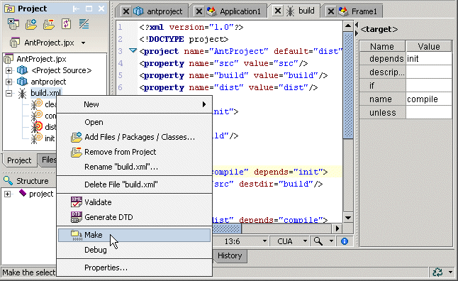

Additional build features
JBuilder provides additional build features, which vary by JBuilder edition.
These are features of all JBuilder editions
- Build projects with Ant
- Add build files to your project with the Ant wizard (File|New|Build|Ant)
- Add additional targets and tasks to the Project menu for building projects and project groups
- Customize and extend the build system with the OpenTool
Builder class
- Automatically discover source packages
These are features of JBuilder Developer and Enterprise
- Switch Java compilers
- Filter packages and exclude them from the build process, as well as import and export filters
- Export a JBuilder project to an Ant build file with the Export To Ant wizard (File|New|Build|Export To Ant)
- Build project groups
- Create external build tasks to execute during the build process
- Selectively copy resources
This is a feature of JBuilder Enterprise
- Generate Java from SQLJ translators

For more information, see:
Building Applications with JBuilder: Building with Ant files
Building Applications with JBuilder: Exporting JBuilder projects to Ant
Building Applications with JBuilder: Configuring the Project menu
Building Applications with JBuilder: Selective resource copying